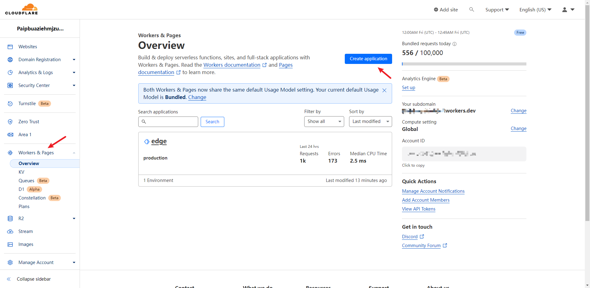
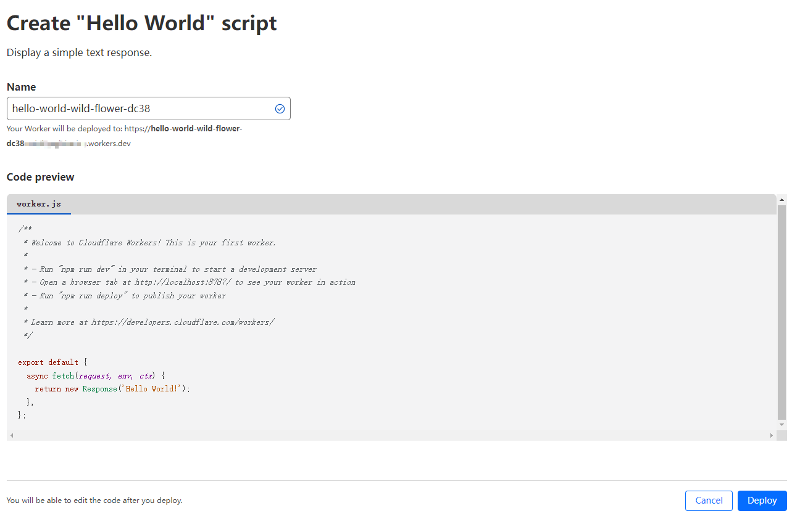
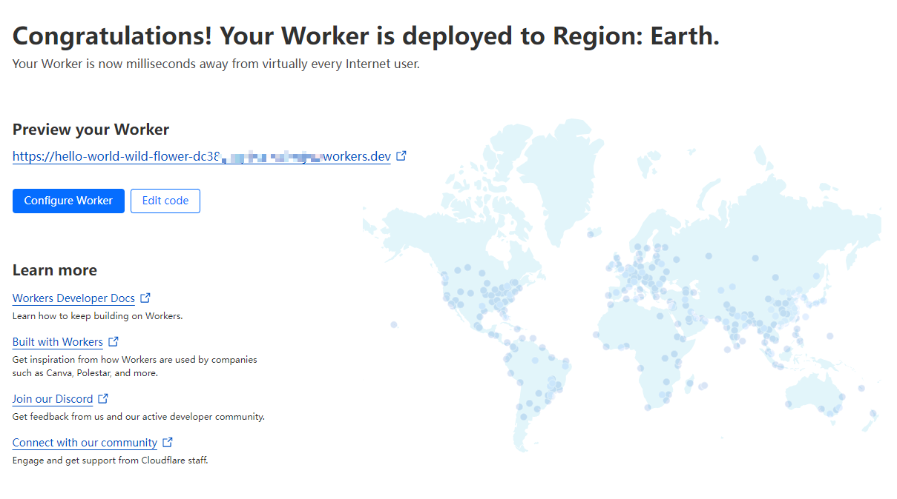
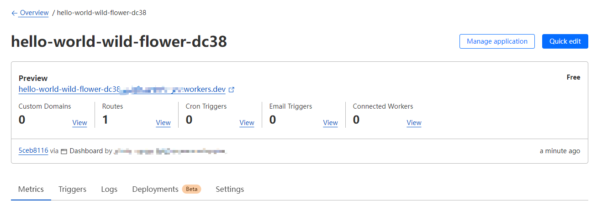
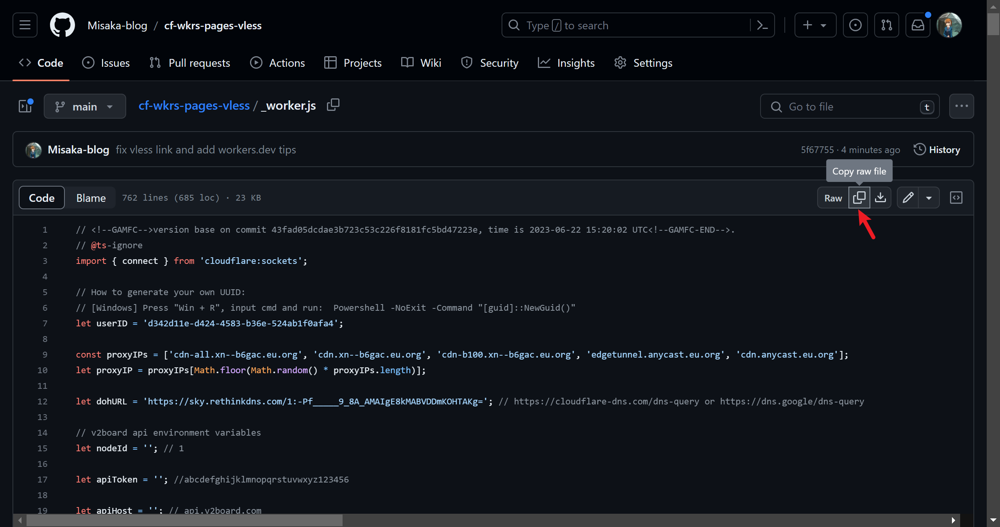
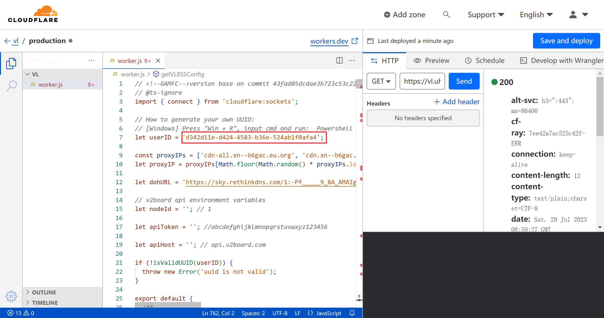
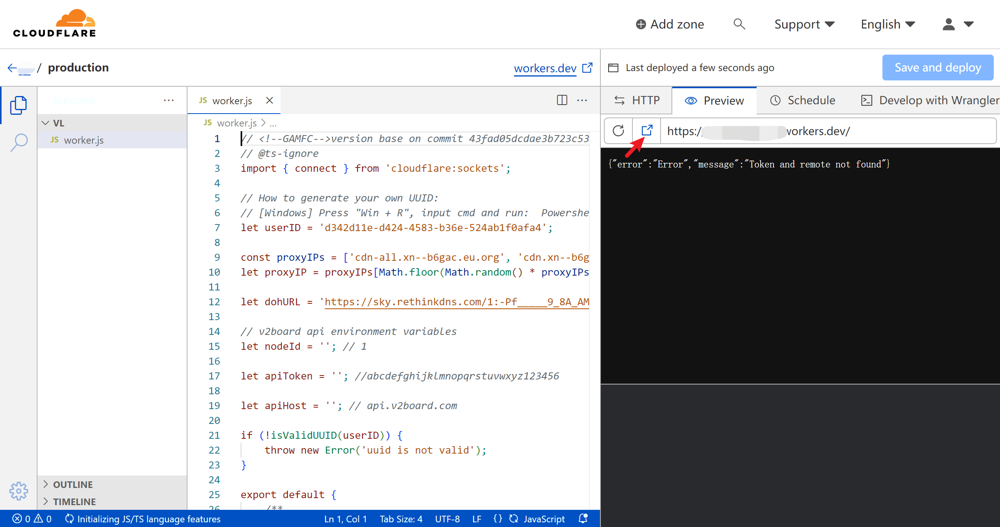
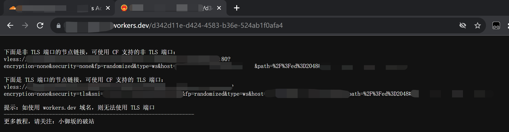
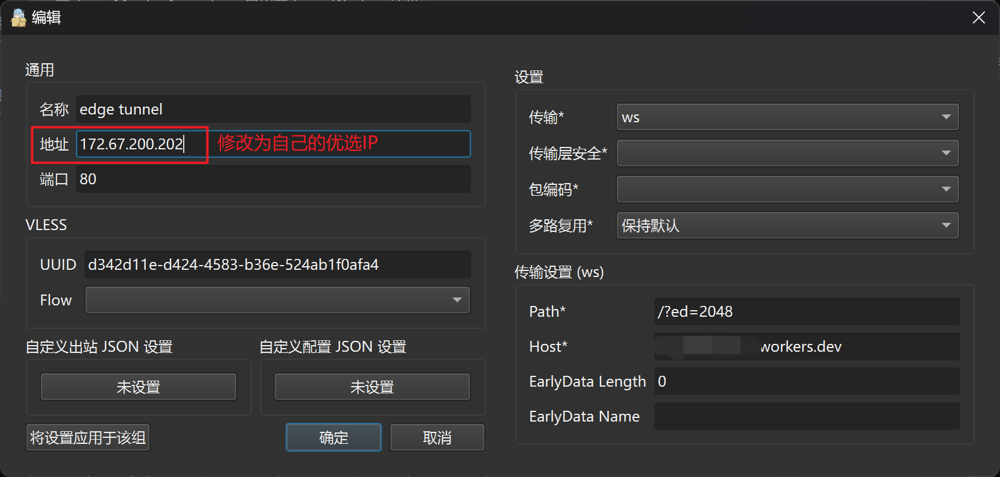
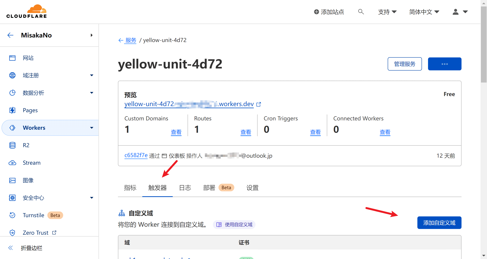

使用 Vercel function 和 CloundFlare Worker
CloudFlare Workers 部署 VLESS 节点
在近期，大家应该不满足于 CloudFlare WARP 有限的速度，开始去尝试在 CloudFlare 里头研究 workers 节点了。在此感谢 zizifn 和 3Kmfi6HP 大佬的贡献，让我们得以在 CloudFlare Workers 部署 VLESS 节点
云到底是什么？
从历史上看，Web应用程序代码已在服务器和浏览器之间分配。它们之间存在着一个巨大的但本质上很简单的网络——点到点传送数据的网络。
我们认为这并不是“云计算”目的。
云计算的真正目的是使得您的代码在它本身的网络中运行。您的代码并非运行在“us-west-4”或“South China Asia（Mumbai）”中，而是无处不在。
更具体地说，它应该在最需要的地方运行。在向新西兰的用户响应时，您的代码应该在新西兰运行。在数据库中处理数据时，代码应该在存储数据的计算机上运行。在与第三方API交互时，您的代码应该在托管API的任何位置运行。当人类探险家到达火星时，他们不会乐意用半个小时等待您的应用程序响应——您的代码也需要在火星上运行。
Cloudflare Workers是迈向这一愿景的第一步。当您部署Worker时，它将在30秒内部署到Cloudflare遍布全球100多个地点的整个边缘网络。您的域名的每个请求都将由您的工作人员在靠近最终用户的Cloudflare位置处理，您无需考虑个别位置。我们在线提供的位置越多，您的代码就越“无处不在”
什么是Worker？
Cloudflare Workers的名称来自Web Workers，更具体地说是Service Workers，一个用于在web浏览器后台运行并拦截HTTP请求的脚本的W3C标准API。Cloudflare Workers是针对相同的标准API编写的，但是是在Cloudflare的服务器上运行，而不是在浏览器中运行。
以下是您可以使用的工具：
- 使用最新的标准语言功能执行任意JavaScript代码。
- 拦截和修改HTTP请求和响应URL，状态，标头和正文内容。
- 直接从您的Worker响应请求，或将其转发到其他地方。
- 将HTTP请求发送到第三方服务器。
- 以串行或并行方式发送多个请求，并使用响应组成对原始请求的最终响应。
- 在响应已经返回到客户端之后发送异步请求（例如，用于记录或分析）。
- 控制其他Cloudflare功能，例如缓存行为。
Workers的用途是无限的，我们很高兴能看到我们的客户提议了什么。以下是我们在测试版中看到的一些想法：
- 将不同类型的请求按路线发送到不同的源服务器。
- 在边缘网络展开HTML模板，以降低原始带宽成本。
- 将访问控制应用于缓存的内容。
- 将一小部分用户重定向到开发用服务器。
- 在两个完全不同的后端之间执行A / B测试。
- 构建完全依赖Web API的“无服务器”应用程序。
- 创建自定义安全过滤器以阻挡应用程序独有的不需要的流量
- 重写请求以提高缓存命中率。
- 实现自定义负载均衡和容错逻辑。
- 无需更新生产服务器即可快速修复应用程序。
- 无需在用户的浏览器中运行代码即可收集分析。
还有很多。
以下是一个例子。
| // A Worker which:
// 1. Redirects visitors to the home page ("/") to a
// country-specific page (e.g. "/US/").
// 2. Blocks hotlinks.
// 3. Serves images directly from Google Cloud Storage.
addEventListener('fetch', event => {
event.respondWith(handle(event.request))
})
async function handle(request) {
let url = new URL(request.url)
if (url.pathname == "/") {
// This is a request for the home page ("/").
// Redirect to country-specific path.
// E.g. users in the US will be sent to "/US/".
let country = request.headers.get("CF-IpCountry")
url.pathname = "/" + country + "/"
return Response.redirect(url, 302)
} else if (url.pathname.startsWith("/images/")) {
// This is a request for an image (under "/images").
// First, block third-party referrers to discourage
// hotlinking.
let referer = request.headers.get("Referer")
if (referer &&
new URL(referer).hostname != url.hostname) {
return new Response(
"Hotlinking not allowed.",
{ status: 403 })
}
// Hotlink check passed. Serve the image directly
// from Google Cloud Storage, to save serving
// costs. The image will be cached at Cloudflare's
// edge according to its Cache-Control header.
url.hostname = "example-bucket.storage.googleapis.com"
return fetch(url, request)
} else {
// Regular request. Forward to origin server.
return fetch(request)
}
}
|
准备材料
注意事项
- 由于 Workers 节点的 IP 变动频繁，因此请勿在此节点登录重要账号
- 请勿滥用！
部署步骤
- 注册 CloudFlare 账户，转到“Workers & Pages”页面，点击“Create Application”按钮

-
点击“Create Worker”按钮
-
设置workers的名称，点击“Deploy”按钮

- 点击“Configure Worker”按钮

- 点击“Quick Edit”按钮，修改代码。

- 转到项目文件：https://github.com/Misaka-blog/cf-wkrs-pages-vless/blob/main/_worker.js ，点击复制按钮将文件内容全部复制，然后粘贴进workers中

- 从 https://www.uuidgenerator.net/ 生成一个新的 UUID，然后替换第7行默认的 UUID，然后点击“Save and deploy”按钮，保存代码。

- 在右侧的侧边栏中，转到“Preview”选项卡，然后点击打开新窗口按钮

- 在访问的域名后面加上
/UUID（例如：https://edge.tunnel.workers.dev/d342d11e-d424-4583-b36e-524ab1f0afa4），可以得到关于 workers 节点的分享链接信息

- 复制任意一条分享链接（如使用默认
workers.dev域名则只能复制非 TLS 端口的链接），导入至客户端。然后修改链接的IP为自己的优选IP

- 如需要绑定自己的域名，则转到“触发器”，点击“添加自定义域”

- 输入你想要绑定的域名（备注：一级域名需要绑定在CloudFlare账号里面）
参考资料:
在 CloudFlare Workers 或 Pages 部署 vless 节点
Use Cloudflare pages and worker serverless to implement VLESS protocol
workers
pages
Cloudflare Workers中强制设置worker区域
问：构建一个与 API 交互的系统，该系统期望 API key被地理锁定到某个区域(例如英国)。
回答： Setup an A record gb.yourdomain.com for the IP of one of Cloudflare’s United Kingdom datacenters, such as 8.41.7.4 which I confirmed working just now. You can use various IP tools to find all the IP’s for Cloudflare’s ASN in which location.
| 'strict mode';
export default {
async fetch(request) {
return fetch(request.url, {
body: request.body,
headers: request.headers,
method: request.method,
redirect: 'manual',
cf: {
resolveOverride: ['MAN','EDI','LHR'].includes(request.cf.colo)
? 'api.yourdomain.com'
: 'gb.yourdomain.com'
}
});
},
};
|
To explain whats happening here. Essentially the HTTP request hits Cloudflares IP for the hostname api.yourdomain.com which a Worker script is setup on. The worker then resolves the IP for API to instead be the IP of GB A Record which hits the datacenter in the desired geolocation and since it’s the same hostname (i.e. api.yourdomain.com) it invokes the same Worker script again but from another geolocation, it then hits the IP of your API server.
Here’s the test, for me I’m in China so the first request hits a datacenter in Hong Kong, and then the worker makes a second request to a datacenter in the United Kingdom. I will provide the logs for both requests below.
The first request:
| {
"outcome": "ok",
"scriptName": "worker-weathered-glade-d581",
"diagnosticsChannelEvents": [],
"exceptions": [],
"logs": [],
"eventTimestamp": 1694839245034,
"event": {
"request": {
"url": "https://api.yourdomain.com/",
"method": "GET",
"headers": {
"accept": "*/*",
"accept-encoding": "gzip",
"cf-connecting-ip": "REDACTED",
"cf-ipcountry": "CN",
"cf-ray": "REDACTED",
"cf-visitor": "{\"scheme\":\"https\"}",
"connection": "Keep-Alive",
"host": "api.yourdomain.com",
"user-agent": "curl/8.1.2",
"x-forwarded-proto": "https",
"x-real-ip": "REDACTED"
},
"cf": {
"clientTcpRtt": 76,
"longitude": "104.05550",
"latitude": "30.64980",
"tlsCipher": "AEAD-AES256-GCM-SHA384",
"continent": "AS",
"asn": 9808,
"country": "CN",
"tlsClientAuth": {
"certIssuerDNLegacy": "",
"certIssuerSKI": "",
"certSubjectDNRFC2253": "",
"certSubjectDNLegacy": "",
"certFingerprintSHA256": "",
"certNotBefore": "",
"certSKI": "",
"certSerial": "",
"certIssuerDN": "",
"certVerified": "NONE",
"certNotAfter": "",
"certSubjectDN": "",
"certPresented": "0",
"certRevoked": "0",
"certIssuerSerial": "",
"certIssuerDNRFC2253": "",
"certFingerprintSHA1": ""
},
"tlsExportedAuthenticator": {
"clientFinished": "6f1b5d862487a8e52cd205c10e0a612872663f5beacac5af8d7a0e018d7fd143864fae0faca91f93a1904b01efb8345b",
"clientHandshake": "21d13e08a59128ff45aca00b79c467151db3c200783a15cc71728283ae631494dfcf02b9e5e4776236132e2c6a7bf645",
"serverHandshake": "c1f3740dcda5d22dc31257e52c66c24422c29b37c5c42a7bef419088b7230fe59764ff4b9a4d2c2792b9f20efd325dbf",
"serverFinished": "bd114e5a9ba1ddd4e00132eefed2020942d88c80233f574a4874c7d1040c8b8964fd57e71363e22e57a66c4070eccca9"
},
"tlsVersion": "TLSv1.3",
"city": "Chengdu",
"timezone": "Asia/Shanghai",
"region": "Sichuan",
"requestPriority": "weight=16;exclusive=0;group=0;group-weight=0",
"colo": "HKG",
"httpProtocol": "HTTP/2",
"regionCode": "SC",
"asOrganization": "China Mobile",
"edgeRequestKeepAliveStatus": 1
}
},
"response": {
"status": 200
}
},
"id": 1
}
|
And the 2nd request (made by the Worker).
| {
"outcome": "ok",
"scriptName": "worker-weathered-glade-d581",
"diagnosticsChannelEvents": [],
"exceptions": [],
"logs": [],
"eventTimestamp": 1694839486890,
"event": {
"request": {
"url": "https://api.yourdomain.com/",
"method": "GET",
"headers": {
"accept": "*/*",
"accept-encoding": "gzip",
"cf-connecting-ip": "162.158.178.8",
"cf-ipcountry": "HK",
"cf-ray": "REDACTED",
"cf-visitor": "{\"scheme\":\"https\"}",
"connection": "Keep-Alive",
"host": "api.yourdomain.com",
"user-agent": "curl/8.1.2",
"x-forwarded-for": "REDACTED",
"x-forwarded-proto": "https",
"x-real-ip": "162.158.178.8"
},
"cf": {
"clientTcpRtt": 198,
"longitude": "114.17590",
"latitude": "22.28420",
"tlsCipher": "AEAD-AES128-GCM-SHA256",
"continent": "AS",
"asn": 13335,
"clientAcceptEncoding": "gzip",
"country": "HK",
"tlsClientAuth": {
"certIssuerDNLegacy": "",
"certIssuerSKI": "",
"certSubjectDNRFC2253": "",
"certSubjectDNLegacy": "",
"certFingerprintSHA256": "",
"certNotBefore": "",
"certSKI": "",
"certSerial": "",
"certIssuerDN": "",
"certVerified": "NONE",
"certNotAfter": "",
"certSubjectDN": "",
"certPresented": "0",
"certRevoked": "0",
"certIssuerSerial": "",
"certIssuerDNRFC2253": "",
"certFingerprintSHA1": ""
},
"tlsExportedAuthenticator": {
"clientFinished": "002886b97a97b7ad5e6804419197e5d080c4b8c1da9af19f39603e08caf92403",
"clientHandshake": "0aa5a5eb9cb79e1a0e61c08a4d32476f75e07eca2c7bfd47175a9daa85529e26",
"serverHandshake": "69f056495c64bef187dfe8647da8385d37e7e8123001cc781cf088b8e8753718",
"serverFinished": "2f1e2d2bb395132dfdd7fc0a65d08e9df2c333785f87353519d62872b90a08c4"
},
"tlsVersion": "TLSv1.3",
"city": "Hong Kong",
"timezone": "Asia/Hong_Kong",
"region": "Central and Western District",
"requestPriority": "weight=16;exclusive=0;group=0;group-weight=0",
"colo": "MAN",
"httpProtocol": "HTTP/2",
"regionCode": "HCW",
"asOrganization": "Cloudflare",
"edgeRequestKeepAliveStatus": 1
}
},
"response": {
"status": 200
}
},
"id": 0
}
|
回答： Here is a simplified version of my code that just acts as a proxy:
Should note:
- Add a Worker Route to your WARP domain (
gb.yourdomain.com) that points to the worker
- Add a Worker Route to your API domain (
api.yourdomain.com) that points to the worker
- Make sure api.yourdomain.com has a proxied : A record to
188.114.96.3
- Make sure your
gb.yourdomain.com A record is proxied : and set to 8.41.7.4
- Update the proxy() function to this to stop it from crashing the entire worker when there is an invalid JSON body
| async function proxy(request: Request): Promise<Response> {
let response: Response | undefined;
try {
const body = (await request.json()) as {
url: string;
options: RequestInit;
};
response = await fetch(body.url, {
...body.options,
cf: {
resolveOverride: 'api.yourdomain.com',
},
});
} catch (error: unknown) {
response = new Response(
JSON.stringify({
error: error instanceof Error ? error.message : error,
message: 'Error running worker',
}),
{
status: 500,
headers: {
'Content-Type': 'application/json',
},
}
);
}
return response;
}
async function forceRegion(request: Request, env: Env): Promise<Response> {
return fetch(request.url, {
...request,
redirect: 'manual',
cf: {
resolveOverride: 'gb.mydomain.com',
},
});
}
export default {
async fetch(request: Request, env: Env): Promise<Response> {
return request.cf && ['MAN', 'EDI', 'LHR'].includes(request.cf.colo as string) ? proxy(request) : forceRegion(request, env);
},
};
|
回答： You can probably use the Geolite databases and filter by the ASN (13335) + Subnet (8.0.0.0/8) on ASN database to get the set of global subnets and then use the City database to narrow it down to a city or country.
You may need to ping the final list of subnets to get some usable IPs.
Running the same command gives me:
| sudo nmap -n -sP 8.41.7.0/2
Nmap done: 256 IP addresses (26 hosts up) scanned in 11.20 seconds
|
原文
为 Vercel function 配置区域
在全球分布式应用程序中，函数与其数据源之间的物理距离可能会影响延迟和响应时间。因此，Vercel 允许您指定函数执行的区域，最好靠近数据源,(例如数据库)。
对于 Serverless function
对于 Edge function
- 默认情况下，边缘函数在最接近传入请求的区域中执行
- 您可以使用路由段配置
preferredRegions来设置一个或多个首选区域，或者在配置对象中指定一个regions键来设置一个或多个区域供您的函数执行
只能为边缘功能设置此项
默认情况下，边缘函数在地理位置最接近传入请求的区域执行，从而减少网络请求时间。但是，如果您的函数依赖于数据源，您可能希望它靠近该源以实现快速响应。
要配置您希望函数在哪个区域（或多个区域）执行，请按以下方式您的首选区域的 ID ：
该preferredRegion选项可用于使用字符串值指定单个区域，或使用字符串数组指定多个区域。有关更多信息，请参阅Next.js 文档
app/api/regional-example/route.ts
| export const runtime = 'edge'; // 'nodejs' is the default
// execute this function on iad1 or hnd1, based on the connecting client location
export const preferredRegion = ['iad1', 'hnd1'];
export const dynamic = 'force-dynamic'; // no caching
export function GET(request: Request) {
return new Response(
`I am an Edge Function! (executed on ${process.env.VERCEL_REGION})`,
{
status: 200,
},
);
}
|
在区域中断期间，Vercel 会自动故障转移到下一个最近的区域以维持正常运行时间。这适用于全局和区域指定的边缘函数。有关更多信息，请参阅outage resiliency
所有新项目的默认功能区域是_美国华盛顿特区_( iad1)
要更改仪表板中的默认区域：
- 从Vercel 上的仪表板中选择适当的项目
- 导航至“设置”选项卡
- 从左侧选择功能
- 使用“功能区域”下拉列表选择项目的默认区域：

只能为 Serverless Functions 设置
更改vercel.json配置文件中的默认区域，请将区域代码添加到"regions"键：
vercel.json
企业用户还可以用来functionFailoverRegions指定无服务器功能在默认区域停止服务时应故障转移到的区域。
只能为 Serverless Functions 设置
使用vercel --regions项目根目录中的命令来设置区域。CLI docsvercel --regions中的命令设置区域的更多信息
Setting failover regions are available on Enterprise plans
为了确保在发生中断时自动故障转移到后备区域，在vercel.json配置中，您可以将一个或多个区域传递给文件functionFailoverRegions
vercel.json
| {
"functionFailoverRegions": ["dub1", "fra1"]
}
|
functionFailoverRegions属性中设置的区域必须与属性中指定的默认区域不同regions。
在自动故障转移期间，Vercel 会将应用程序流量重新路由到下一个最近的区域，这意味着区域的顺序functionFailoverRegions并不重要。有关故障转移路由如何工作的更多信息，请参阅functionFailoverRegions。
您可以通过部署摘要查看默认区域和故障转移区域：
参考资料
Any text/graphics/videos and other articles on this website that indicate "Source: xxx" are reprinted on this website for the purpose of transmitting more information, which does not mean that we agree with their views or confirm the authenticity of their content. If you are involved in the content of the work, copyright and other issues, please contact this website, we will delete the content in the first time!
Author: MisakaNo
Source: https://blog.cloudflare.com/cloudflare-workers-unleashed-zh-cn, https://blog.misaka.rest/2023/07/29/cf-wkrs-vless/ ,